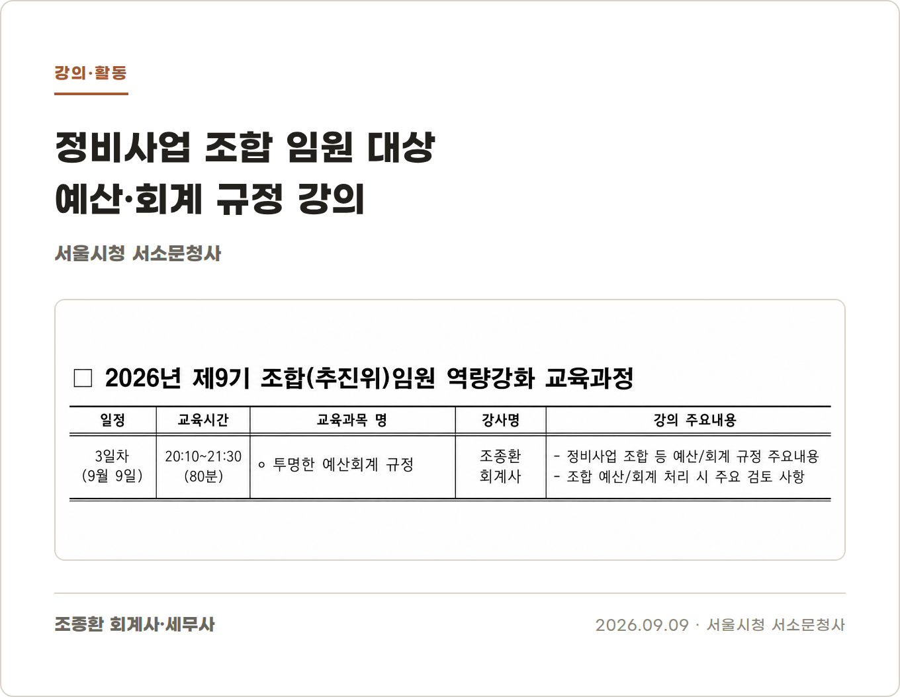

서울시 정비사업 조합 임원 대상 예산·회계 규정 강의를 다녀왔습니다
지난 9월 9일, 서울시청 서소문청사에서 진행된 교육에서 정비사업 조합 임원분들을 대상으로 예산·회계 규정 강의를 맡았습니다.
제가 맡은 시간은 저녁 8시 10분부터 9시 30분까지였습니다. 하루 일과를 마친 뒤였을 텐데 늦은 시간까지 자리를 지켜주신 참석자분들께 감사한 마음이 들었습니다.

강의 주제는 '투명한 예산·회계 규정'이었습니다.
규정을 그대로 읽기보다는 실제 조합에서 생길 수 있는 사례를 중심으로 설명했습니다. 예산을 총회에서 의결했는데도 별도의 절차가 필요한 경우, 계좌이체 내역은 있지만 증빙이 충분하지 않은 경우, 통장과 결산서의 숫자가 다르게 보이는 이유 등을 함께 살펴봤습니다.
강의 중간에는 예상하지 못했던 질문도 나왔습니다. 덕분에 준비한 내용만 전달하는 자리가 아니라 현장의 고민을 함께 나누는 시간이 됐습니다.
강의가 끝난 뒤에도 몇 분이 남아 질문을 주셨습니다. 실제 업무에서는 규정 한 줄만으로 답하기 어려운 일이 많다는 것을 다시 느꼈습니다.
늦은 시간까지 함께해 주신 조합 임원분들께 감사드립니다.
재개발·재건축·가로주택정비사업 조합과 추진위원회를 직접 방문해 예산·회계 실무 강의를 진행하고 있습니다.
조합 임원·대의원 교육이 필요하신 경우 아래 메일로 편하게 문의해 주세요.
강의 문의: kicpa.jjh@gmail.com
조종환 공인회계사·세무사